The Saint Augustine's School Rummage Sale is this weekend. If you have stuff you would like to donate, please bring it before noon on Thursday.
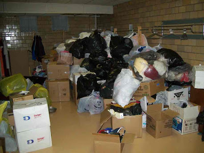The sale begins Friday when the doors open at 9:00. Fill a grocery bag for $2. On Saturday Oct 3 from 9 am to noon fill any size bag or box for $1.
(The picture shows the pile before it is set out on the tables. Putting on a rummage sale takes a lot of work, but a lot of people really enjoy this one.)

This blog reports events and interesting tidbits from Rensselaer, Indiana and the surrounding area.
Wednesday, September 30, 2009
Runway
Construction activity continues at the Jasper County Airport. On Tuesday morning these strange structures were sitting near the south end of the runway. I have no idea what they are for, but it appears that they are made of rebar.
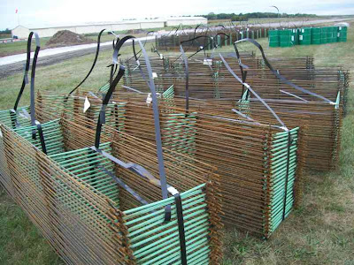There were workers on the north end of the runway. The shoulder was recently disturbed soil, and I think drainage tile had been laid under it.
A few feet beyond the north end of the runway sat the machine shown below. It seems to be a resurfacing machine, and it should be in action pretty soon.
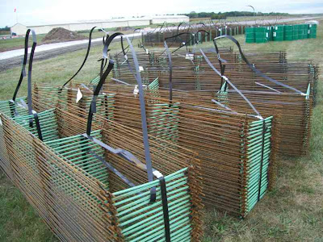There were workers on the north end of the runway. The shoulder was recently disturbed soil, and I think drainage tile had been laid under it.
A few feet beyond the north end of the runway sat the machine shown below. It seems to be a resurfacing machine, and it should be in action pretty soon.
SJC Homecoming 5K
I have written unkind things about the 5K that SJC has had on homecoming weekend. This year the race had new management, a sports-management class in the PE department, and at the urging of the teacher of the class, Pat Querry, I decided to give them another chance. The students planned the course, did the publicity, and ran the event. I do not know if any of them had ever had previous experience with a 5K run-walk. Below is a picture of them registering runners and walkers.
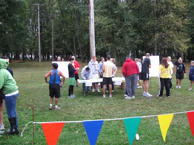There were quite a few people at the start line. However, unlike every other 5K I have witnessed, there was no announcement at the start of the race for all those who had not registered to get out. In fact, two sports teams were using the run as a morning work out. Since they did not discourage gate crashers, I crashed the gate. (Of course, that meant no tee shirt or award.)
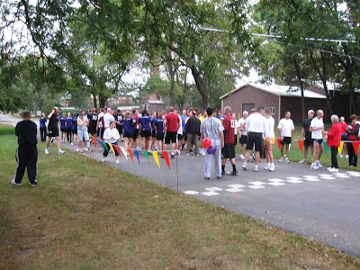The course began at the start line for the Little 500 go-cart race, went south to Shuster Road, and then east to the highway. It followed much of the 5K course that is used for cross country meets. However, 5K runners are not usually cross country runners--they like to run on hard surfaces rather than grass. So when the course routed them on the grass along US 231, all the runners ran on the shoulder of the highway. When they got to the bowling alley, they finally had to run on grass as the course took them north of the football field. Below you can see a string of runners heading toward Sparling Avenue. The lead runners are already out of the picture as they are moving south on Sparling.
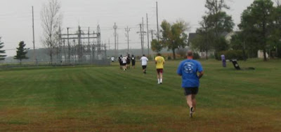The course followed Sparling, and the runners did not, to my surprise, run on the road but rather on the path west of the road. Once past the youth center, the course took them west around the parking lot and the softball field. Then it was west on 650 south, around Lake Banet, and then back to the finish line. Below the runners have strung out a lot more as they emerged from the Lake Banet area and are back on Sparling. Note the yellowing of the soybean field. Harvest is getting close.
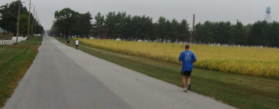It is always fun to watch people finish. Below are two of the baseball players who had a sprint to the finish. They probably were not running too hard on the course.
The women's soccer team used the run both as conditioning and as a team-building experience. All but a few finished in this happy pack.After waiting for the walkers, it was time for awards. Pat was taking pictures until her camera started showing the low-battery indicator. Then she asked me to help her out.
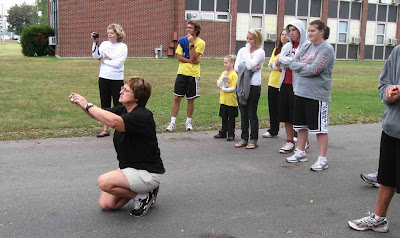As a result, I have pictures of many of the finishers. Here are some local runners who did well. (One of the little glitches that they need to fix for next year is that they combined men and women awards instead of having separate awards as pretty much every other 5K has. There is a good reason to give awards by age and gender.)
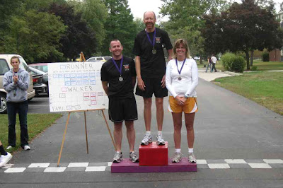The little awards platform is a nice touch, isn't it? Pat's husband made it.
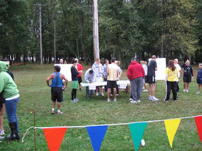There were quite a few people at the start line. However, unlike every other 5K I have witnessed, there was no announcement at the start of the race for all those who had not registered to get out. In fact, two sports teams were using the run as a morning work out. Since they did not discourage gate crashers, I crashed the gate. (Of course, that meant no tee shirt or award.)
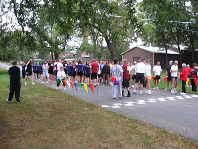The course began at the start line for the Little 500 go-cart race, went south to Shuster Road, and then east to the highway. It followed much of the 5K course that is used for cross country meets. However, 5K runners are not usually cross country runners--they like to run on hard surfaces rather than grass. So when the course routed them on the grass along US 231, all the runners ran on the shoulder of the highway. When they got to the bowling alley, they finally had to run on grass as the course took them north of the football field. Below you can see a string of runners heading toward Sparling Avenue. The lead runners are already out of the picture as they are moving south on Sparling.
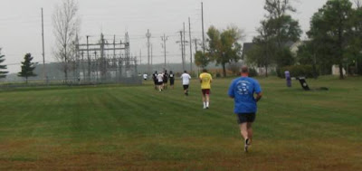The course followed Sparling, and the runners did not, to my surprise, run on the road but rather on the path west of the road. Once past the youth center, the course took them west around the parking lot and the softball field. Then it was west on 650 south, around Lake Banet, and then back to the finish line. Below the runners have strung out a lot more as they emerged from the Lake Banet area and are back on Sparling. Note the yellowing of the soybean field. Harvest is getting close.
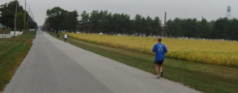It is always fun to watch people finish. Below are two of the baseball players who had a sprint to the finish. They probably were not running too hard on the course.
The women's soccer team used the run both as conditioning and as a team-building experience. All but a few finished in this happy pack.After waiting for the walkers, it was time for awards. Pat was taking pictures until her camera started showing the low-battery indicator. Then she asked me to help her out.
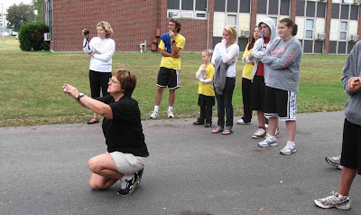As a result, I have pictures of many of the finishers. Here are some local runners who did well. (One of the little glitches that they need to fix for next year is that they combined men and women awards instead of having separate awards as pretty much every other 5K has. There is a good reason to give awards by age and gender.)
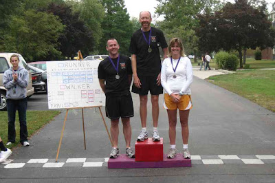The little awards platform is a nice touch, isn't it? Pat's husband made it.
Tuesday, September 29, 2009
Rensselaer's biggest fountain
I thought of the Rensselaer Republican's weekly contest that asks readers to identify various landmarks around Rensselaer as I was admiring Rensselaer's largest fountain this morning. I wondered how many of the readers of this blog know where Rensselaer's largest fountain is located. Here is one hint: I have not previously mentioned it on this blog.
What the heck. I will give you a big hint; I will show you a picture.
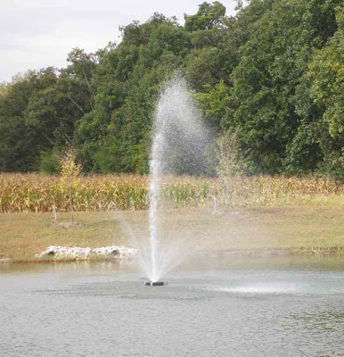Where is it located? Answer in the comments.
What the heck. I will give you a big hint; I will show you a picture.
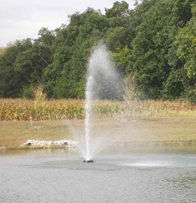Where is it located? Answer in the comments.
A business gone to the dogs
On Monday I noticed a new business downtown, next to the alley that features Art in the Alley. It was Tub Time Dog Grooming. I like the window--whoever did it did a great job.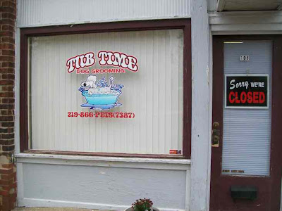
Shopping at Bags, Bangles & Baskets.
One of Rensselaer's newest businesses is Bags, Bangles & Baskets, which opened in July on Washington Street across from the Court House. I stopped in during the Little Cousin Jasper Festival to see what they had.
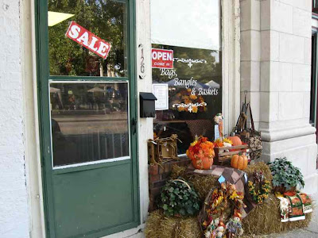The store is long and narrow--an alley stopper. In fact, there once was an alley where this store is now. It has been a number of things since, including many years ago a restaurant or two. It may actually have been a restaurant when I came to Rensselaer. Does Mary's Cafe or Mary's Restaurant ring any bells?
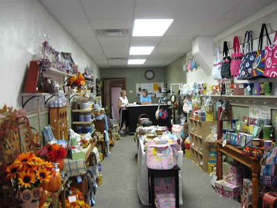The store carries a variety of products. I asked who their competition was, and they did not think they had competition in the sense that no one else carried exactly the same products as they do.
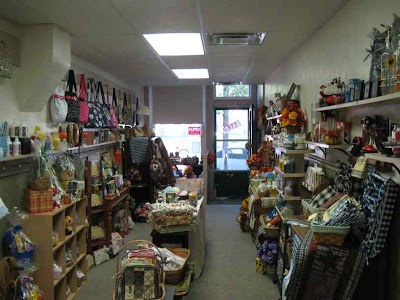Everything is very tastefully arranged. The shop reminded me of the floral shops and the jewelry store a bit because all of them are in the gift market. It is the kind of place that makes women comfortable and men a little uncomfortable.
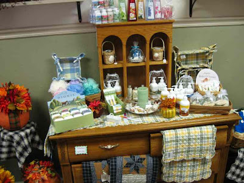I am not sure why the old peace sign of the 60s and 70s is undergoing a revival. Clearly for most people it does not have the connotations that I associate with it from my years at the University of Wisconsin in Madison.
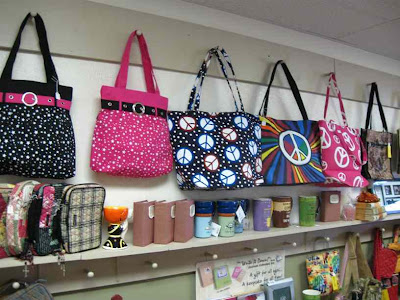If you like gift stores or need a bag, basket, or bangle, stop in and see what they have.
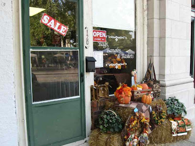The store is long and narrow--an alley stopper. In fact, there once was an alley where this store is now. It has been a number of things since, including many years ago a restaurant or two. It may actually have been a restaurant when I came to Rensselaer. Does Mary's Cafe or Mary's Restaurant ring any bells?
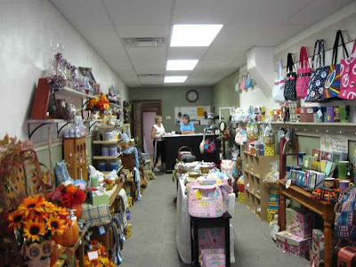The store carries a variety of products. I asked who their competition was, and they did not think they had competition in the sense that no one else carried exactly the same products as they do.
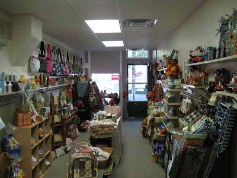Everything is very tastefully arranged. The shop reminded me of the floral shops and the jewelry store a bit because all of them are in the gift market. It is the kind of place that makes women comfortable and men a little uncomfortable.
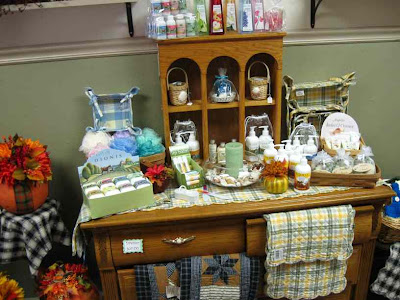I am not sure why the old peace sign of the 60s and 70s is undergoing a revival. Clearly for most people it does not have the connotations that I associate with it from my years at the University of Wisconsin in Madison.
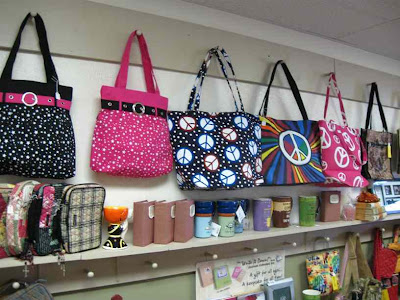If you like gift stores or need a bag, basket, or bangle, stop in and see what they have.
Monday, September 28, 2009
Melville Update
On Sunday morning I visited the Melville construction for the first time in over a week. Some of the underground culverts and the big concrete cylinders are now in place.
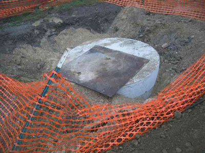The storms sewers will drain into the Schoolhouse Ditch that is north or the Eger substation. The concrete culvert is from the new construction, and the metal one is the culvert that takes the ditch under Melville. The picture was taken before the fog burned off on Sunday morning.
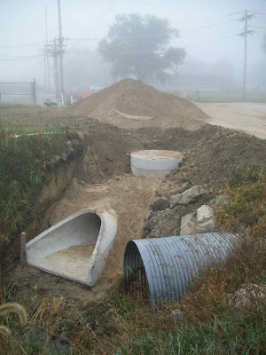This morning I stopped by to see what they were doing and there was a second backhoe on the site. In the minute after this picture was taken, it maneuvered its empty arm to reposition the bucket that is in front of it and then attached it. I was impressed with the skill of the operator. I wonder if working video games helps develop the skills necessary to work these machines with the precision that the operators have.
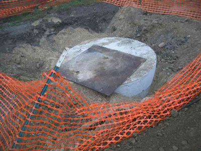The storms sewers will drain into the Schoolhouse Ditch that is north or the Eger substation. The concrete culvert is from the new construction, and the metal one is the culvert that takes the ditch under Melville. The picture was taken before the fog burned off on Sunday morning.
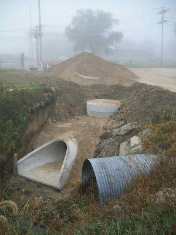This morning I stopped by to see what they were doing and there was a second backhoe on the site. In the minute after this picture was taken, it maneuvered its empty arm to reposition the bucket that is in front of it and then attached it. I was impressed with the skill of the operator. I wonder if working video games helps develop the skills necessary to work these machines with the precision that the operators have.
SJC Homecoming 2009
This past weekend was SJC's annual homecoming weekend. The big event of the weekend is traditionally the football game. Before and after the game, and during the game for those who are not all that interested in football, there are other activities, some for kids. Last year I recall the bucking bronco apparatus, This year there was a surfboard that no kid stayed on for more than 10 seconds. Even when they laid on the board, they soon spun off. Still, it must have looked like a lot of fun to the kids, because there was always a queue. The SJC Art Club had other things for kids, including help in making a tie-dyed shirt. For older people, there was the always popular beer area. Here is an addition to my collection of delivery trucks.
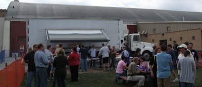The football game was not very interesting because the home team was clearly much better than the visitors. (You generally want that for homecoming, don't you?) I watched the first half as SJC ran up a 27 to 0 lead. Then came the highlight of the game, halftime show with the SJC marching band.
The fiery baton twirler was a nice touch to finish the performance.
Below are two minutes of video that highlight the drum line. As you can tell, the audience appreciated the performance.
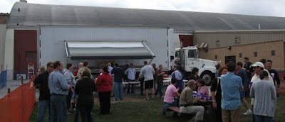The football game was not very interesting because the home team was clearly much better than the visitors. (You generally want that for homecoming, don't you?) I watched the first half as SJC ran up a 27 to 0 lead. Then came the highlight of the game, halftime show with the SJC marching band.
The fiery baton twirler was a nice touch to finish the performance.
Below are two minutes of video that highlight the drum line. As you can tell, the audience appreciated the performance.
***
***
***
Sunday, September 27, 2009
Music in the park
Saturday was a very busy day around Rensselaer. SJC had its homecoming (expect several posts about that), and there were also a number of events and activities in town. The library had their 3rd Annual Perennial Plant Exchange. I took in some Egyptian walking onions and took home some mums. Fellowship of Living Hope and several others sponsored a Music-in-the-Park event that was not too well attended, but had decent music. It was interesting hearing familiar religious lyrics with very different rhythms and melodies.
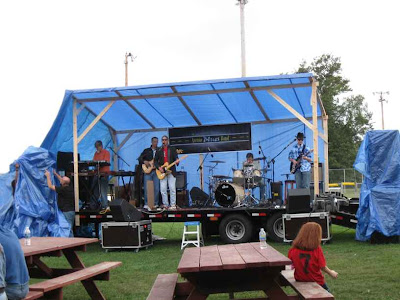Of course they had the mandatory kiddie inflatables.
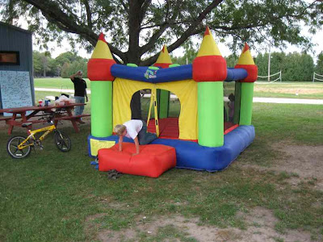Also in the park was staging point for the Poker Run and Fundraiser Ride for Birthright sponsored by a group of Christian motorcycle riders. A poker run, for those who do not know these things, has the riders stop at a number of stops (five would work well). At each stop they pull a card from a deck of cards and record the card. When they get back, the rider with the best poker hand wins something, probably a prize that some sponsor donated to the cause.
(I did not know what a poker run was until yesterday.)
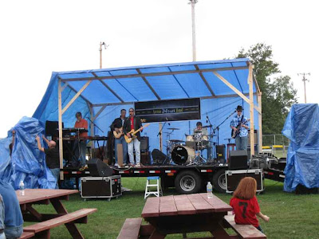Of course they had the mandatory kiddie inflatables.
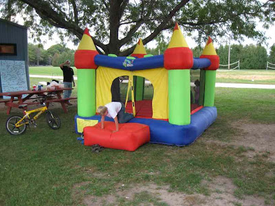Also in the park was staging point for the Poker Run and Fundraiser Ride for Birthright sponsored by a group of Christian motorcycle riders. A poker run, for those who do not know these things, has the riders stop at a number of stops (five would work well). At each stop they pull a card from a deck of cards and record the card. When they get back, the rider with the best poker hand wins something, probably a prize that some sponsor donated to the cause.
(I did not know what a poker run was until yesterday.)
Stained glass at St. Mary's (part 2)
This post completes the tour of stained glass windows at St. Mary's Church in Beaverville, IL.
The seventh window in the series shows the Death of St. Joseph. I was not quite sure what this was until I read the guide. There is no Biblical source for this. The last mention of Joseph in the Gospels is in the story of the young Jesus in the temple. Since he is not mentioned later, the assumption is that he died before the public ministry of Christ.
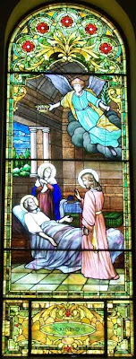The next window is Christ blessing the Children. (Mark 9:36-7, also in Luke and Matthew). Putting this scene in the series strikes me as odd because Mary is not mentioned in the gospels accounts. (Other things that strike me as odd in the selection of scenes: there is no window for the flight into Egypt, and there is no window for the wedding feast at Cana.) But since the nuns were staffing a school, they probably wanted a scene with children in it.
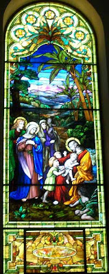There are two very large windows on the sides. One is of Christ carrying the cross, the part of the crucifixion narrative.
The deposition from the cross is the topic of many artists, none more famous than Michelangelo.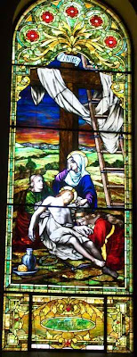The other large window shows the Assumption of Mary.
 Window 12 shows Mary Queen of Heaven holding the Christ child. Below are two souls in purgatory. An angel is drawing one up into heaven, while another angel is telling the second he has to wait a bit longer.
Window 12 shows Mary Queen of Heaven holding the Christ child. Below are two souls in purgatory. An angel is drawing one up into heaven, while another angel is telling the second he has to wait a bit longer.
Window 13 shows Mary with St. Dominic receiving the rosary. Dominic was the founder of the Dominican order, which remains one of the largest orders of priests and nuns in the Catholic Church. The most famous Dominican was St. Thomas Aquinas.
The final window in the series is of the apparition of Mary to Bernadette at Lourdes. This scene is not surprising because Lourdes is in France, Beaverville was populated by people of French descent, and the nuns staffing the school were from an order with roots in France. Also, the grotto on the grounds was meant to be a recreation of the grotto at Lourdes.
Here is a view of the church from the entrance looking toward the altar. The color scheme is appropriate for a church named St. Mary's. You can see at least bits of the seven stained-glass windows behind the altar. I did not get usable photos of these. The are windows showing Bishop Just and St. Viator, St. Monica and St. Augustine, the Last Supper, Joseph of Arimathea takes down Jesus, St. Anthony of Padua, and a guardian angel watching over a boy.
The small circular windows around the base of the dome are plain and let in light.
These windows were restored between the summer of 2001 and the summer of 2004.
The seventh window in the series shows the Death of St. Joseph. I was not quite sure what this was until I read the guide. There is no Biblical source for this. The last mention of Joseph in the Gospels is in the story of the young Jesus in the temple. Since he is not mentioned later, the assumption is that he died before the public ministry of Christ.
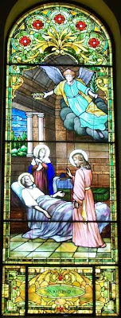The next window is Christ blessing the Children. (Mark 9:36-7, also in Luke and Matthew). Putting this scene in the series strikes me as odd because Mary is not mentioned in the gospels accounts. (Other things that strike me as odd in the selection of scenes: there is no window for the flight into Egypt, and there is no window for the wedding feast at Cana.) But since the nuns were staffing a school, they probably wanted a scene with children in it.
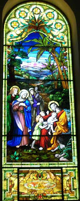There are two very large windows on the sides. One is of Christ carrying the cross, the part of the crucifixion narrative.
The deposition from the cross is the topic of many artists, none more famous than Michelangelo.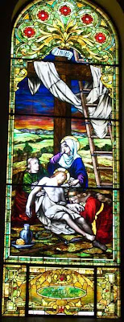The other large window shows the Assumption of Mary.
Window 12 shows Mary Queen of Heaven holding the Christ child. Below are two souls in purgatory. An angel is drawing one up into heaven, while another angel is telling the second he has to wait a bit longer.Window 13 shows Mary with St. Dominic receiving the rosary. Dominic was the founder of the Dominican order, which remains one of the largest orders of priests and nuns in the Catholic Church. The most famous Dominican was St. Thomas Aquinas.
The final window in the series is of the apparition of Mary to Bernadette at Lourdes. This scene is not surprising because Lourdes is in France, Beaverville was populated by people of French descent, and the nuns staffing the school were from an order with roots in France. Also, the grotto on the grounds was meant to be a recreation of the grotto at Lourdes.
Here is a view of the church from the entrance looking toward the altar. The color scheme is appropriate for a church named St. Mary's. You can see at least bits of the seven stained-glass windows behind the altar. I did not get usable photos of these. The are windows showing Bishop Just and St. Viator, St. Monica and St. Augustine, the Last Supper, Joseph of Arimathea takes down Jesus, St. Anthony of Padua, and a guardian angel watching over a boy.
The small circular windows around the base of the dome are plain and let in light.
These windows were restored between the summer of 2001 and the summer of 2004.
Saturday, September 26, 2009
More storage space
Back in March I noticed construction activity at a building on Kellner Street between Cullen and Weston. In May I posted a couple of photos of the construction (or maybe destruction) in progress. The activity was been sporadic during the summer, but in the last couple of weeks there has been a spurt of activity.
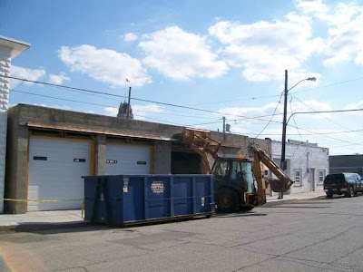Last week strips of wood were attached to the building, a sign that the whole thing would be getting a facelift.
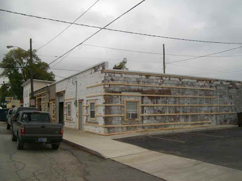Peeking through the windows, we can see that the back of the building is still not finished.
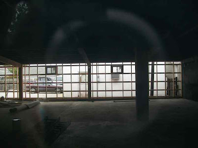This week the new facade began to appear. I found a worker leaving the site on Friday afternoon and asked him what the future of the building was. He said that it would be rented as unheated storage space and an office. I think he said storage of construction materials such as siding was a possibility. So it seems that when the renovation is finished, nothing too exciting will be happening here.
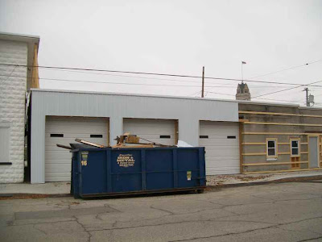However, it should look a lot nicer than it has looked in the past.
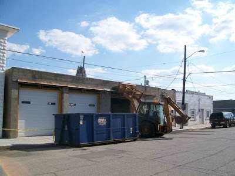Last week strips of wood were attached to the building, a sign that the whole thing would be getting a facelift.
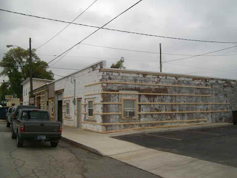Peeking through the windows, we can see that the back of the building is still not finished.
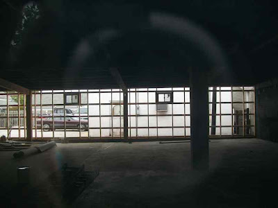This week the new facade began to appear. I found a worker leaving the site on Friday afternoon and asked him what the future of the building was. He said that it would be rented as unheated storage space and an office. I think he said storage of construction materials such as siding was a possibility. So it seems that when the renovation is finished, nothing too exciting will be happening here.
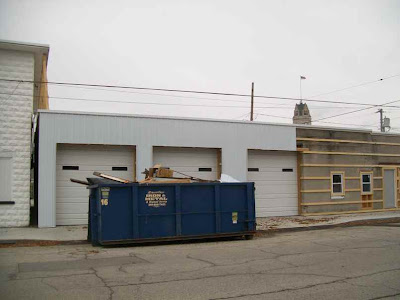However, it should look a lot nicer than it has looked in the past.
Friday, September 25, 2009
Ruins at the end of Vine
At the west end of Vine Street, a path that was once a driveway continues on to a clump of trees in the fields that are now being developed into commercial and/or residential use. In that clump of trees are the ruins of a house and an outbuilding. Not much more than foundations remain.
In the picture below trees are growing up in the foundations of what was an out building, splitting a wall from a concrete floor. What kind of outbuilding would have a concrete floor?
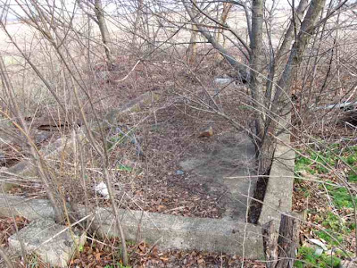A bit to the west are the foundations of the residence. Facing south are stairs, presumably the front door of the house. The stairs have sunk a bit so they no longer line up properly with the foundation.
Below are the stairs from a different angle. There are many more trees growing up inside the foundations of this building than there were growing in the outbuilding. Not visible in these pictures, the rusted remnants of what appears to be an old desk resting a bit to the right and behind the stairs.
A closer look at the foundation shows that the concrete is very thin. The structure was set atop a stone foundation that had a veneer of concrete. There does not appear to have been a basement, only a crawl space between the ground and a wooden floor.
 Toward the back of the house there is a concrete floor, but my guess is that this is actually the top of a cistern because an old pump extrudes from it. I have lived in two old houses that had cisterns to catch rainwater. Originally the water could then be pumped into the kitchen for use, but the pumps were gone by the time I lived in the houses.
Toward the back of the house there is a concrete floor, but my guess is that this is actually the top of a cistern because an old pump extrudes from it. I have lived in two old houses that had cisterns to catch rainwater. Originally the water could then be pumped into the kitchen for use, but the pumps were gone by the time I lived in the houses.
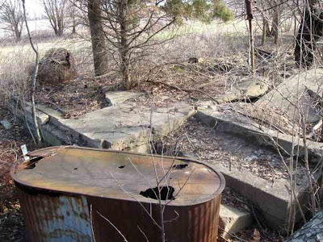Below is the same section of the house from the other side, with the rusted tank in the back instead of the front.
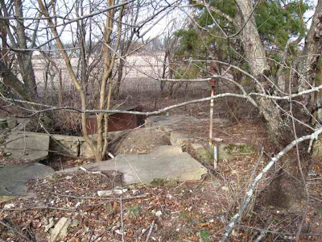When I see ruins, I always wonder what their story was. When was the structure built? Who lived there? Why was it abandoned?
I would not be surprised if in a few years these ruins are removed and something else will be built on the site.
In the picture below trees are growing up in the foundations of what was an out building, splitting a wall from a concrete floor. What kind of outbuilding would have a concrete floor?
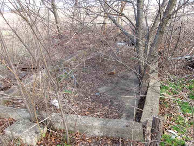A bit to the west are the foundations of the residence. Facing south are stairs, presumably the front door of the house. The stairs have sunk a bit so they no longer line up properly with the foundation.
Below are the stairs from a different angle. There are many more trees growing up inside the foundations of this building than there were growing in the outbuilding. Not visible in these pictures, the rusted remnants of what appears to be an old desk resting a bit to the right and behind the stairs.
A closer look at the foundation shows that the concrete is very thin. The structure was set atop a stone foundation that had a veneer of concrete. There does not appear to have been a basement, only a crawl space between the ground and a wooden floor.
Toward the back of the house there is a concrete floor, but my guess is that this is actually the top of a cistern because an old pump extrudes from it. I have lived in two old houses that had cisterns to catch rainwater. Originally the water could then be pumped into the kitchen for use, but the pumps were gone by the time I lived in the houses.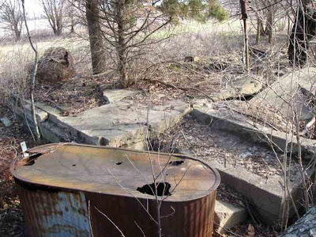Below is the same section of the house from the other side, with the rusted tank in the back instead of the front.
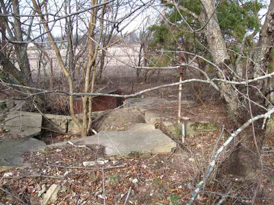When I see ruins, I always wonder what their story was. When was the structure built? Who lived there? Why was it abandoned?
I would not be surprised if in a few years these ruins are removed and something else will be built on the site.
Bats
Thursday, September 24, 2009
Topping the elevator
All summer long workers were rebuilding the tops of the grain elevator that is south of the tracks. Most of the time they were doing things that were pretty much invisible from ground level. A couple of weeks ago they brought back the crane and I think they finished putting in the pipes at the top. I have written about this construction a number of places, including here, and more recently here and here. Below is a picture from July 31.
On August 12 I noticed a new structure on the top.On September 7 or 8 the crane was back and the workers were putting in the pipes that live at the top of these structures.
After two days the crane left for a few days and I was wondering if they were done. It seemed that they needed more pipes up there.
Life at the top--I am sure the view is great.
A few days later the crane was back and I took the picture of the guy riding the ball of the crane to the top. He was helping install a pipe that went from the very top to the metal tank shown below.
Click on the any of these pictures to get a bigger and better view.
The day after this picture (I think the 14th), the crane disappeared. The workers are still busy doing things up there, but I cannot tell what it is from the ground.
Soon farmers will be harvesting their fields. Will this elevator be ready to store the grain?
On August 12 I noticed a new structure on the top.On September 7 or 8 the crane was back and the workers were putting in the pipes that live at the top of these structures.
After two days the crane left for a few days and I was wondering if they were done. It seemed that they needed more pipes up there.
Life at the top--I am sure the view is great.
A few days later the crane was back and I took the picture of the guy riding the ball of the crane to the top. He was helping install a pipe that went from the very top to the metal tank shown below.
Click on the any of these pictures to get a bigger and better view.
The day after this picture (I think the 14th), the crane disappeared. The workers are still busy doing things up there, but I cannot tell what it is from the ground.
Soon farmers will be harvesting their fields. Will this elevator be ready to store the grain?
Subscribe to:
Posts (Atom)